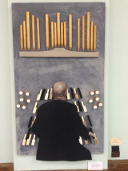

-1-MasterItem.svg)
Stories of Westminster United Church & its People / Page
164
Dame Cathedral and Washington Cathedral. It is the only
concert series of its kind in Winnipeg, serving mainly the
Winnipeg community but also drawing patrons from southern
Manitoba. Audiences are treated to some of the greatest organ
music written and offered the opportunity to hear varied organ
repertoire in an exceptional acoustic environment with superb
sight lines to the organ console.
For his 45th Anniversary, Westminster United Church
commissioned Montreal organist and composer Rachel Laurin
to write Suite in D major for Don Menzies opus 63 for Organ in
celebration of the occasion. The fifteen-minute work, based on
the hymn
For the Music of Creation
, has three movements. The first
movement has six variations on the melody. The last of these
variations, in its ‘non-pedal’ version, alludes to a Christmas Day
1991 during Don’s tenure when he broke a leg. According to the
composer: “Having two versions of the same variation could help
in these particular cases, leaving everything to ‘hands in praise’
to avoid ‘dancing feet’ …!” Cantabile and Dialogues form the second and third movements. The piece
may be played as a whole or each movement may be performed separately within a
liturgical service.
The picture above was a gift to Don from Rev. Bob Burton on the occasion of his
50th Anniversary
(an ingenious construction of “found pieces” showing Don at the console.)
Don’s time at Westminster Church has been defined by major enhancements regarding
music
making at the church. Whenever funds have been made available, he has been very
involved in the
project management of each acquisition:
